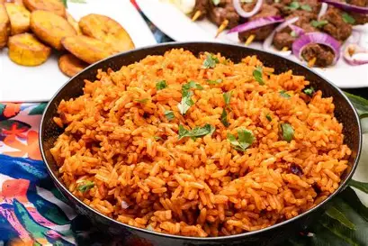

Jollof

Description
Jollof Rice is a beloved West African dish, especially popular in countries like Nigeria, Ghana, and Senegal. It’s made by cooking rice in a flavorful blend of tomatoes, onions, red bell peppers, and spices, which gives it its signature red color and rich taste.
The dish is often prepared for celebrations like birthdays, weddings, and holidays, and everyone has their own version — which has even sparked friendly rivalries, like the famous Nigeria vs. Ghana jollof debate.
Jollof rice is usually served with fried plantains, grilled chicken, beef, or fish, and can be customized with vegetables or extra spice depending on personal taste. It’s not just a meal — it’s a cultural tradition that brings people together.
Ingredients
2 cups of long-grain parboiled rice
4 large tomatoes (or 1 can of chopped tomatoes)
2 red bell peppers
1 large onion (half for blending, half for frying)
2 cloves of garlic
A thumb-sized piece of ginger
3 tablespoons of tomato paste
1 teaspoon of thyme
1 teaspoon of curry powder
1 bay leaf (optional)
2–3 cups of chicken stock or water
Salt to taste
Seasoning cubes or powder (e.g., Maggi or Knorr)
1/4 cup of vegetable or sunflower oil
(Optional) Chopped vegetables like carrots and peas
(Optional) Cooked chicken, beef, or fish for serving
Steps
1. Wash the rice thoroughly in cold water until the water runs clear. Set it aside.
2. In a blender, combine the tomatoes, red bell peppers, half the onion, garlic, and ginger. Blend until smooth.
3. Heat oil in a large pot. Chop and add the remaining onion and sauté until soft. Add tomato paste and stir for a few minutes to reduce the sour taste.
4. Pour in the blended tomato-pepper mix. Cook on medium heat until the mixture thickens and the oil starts to separate (about 10–15 minutes).
5. Add thyme, curry powder, seasoning cubes, salt, and a bay leaf if using. Stir and let cook for a few minutes.
6. Add thyme, curry powder, seasoning cubes, salt, and a bay leaf if using. Stir and let cook for a few minutes.
7. Reduce heat to low. Cover the pot tightly and allow the rice to cook by steaming. Check occasionally and add a bit more water or stock if needed. Avoid stirring too much to prevent mushiness
8. When the rice is nearly done, stir gently. Add optional vegetables (like carrots and peas) or meat if desired. Let it steam a bit more until fully cooked.
9. Serve